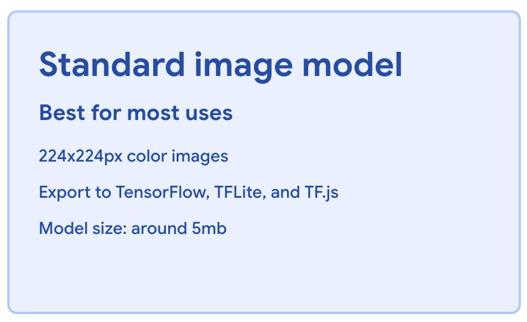
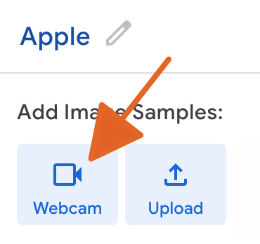
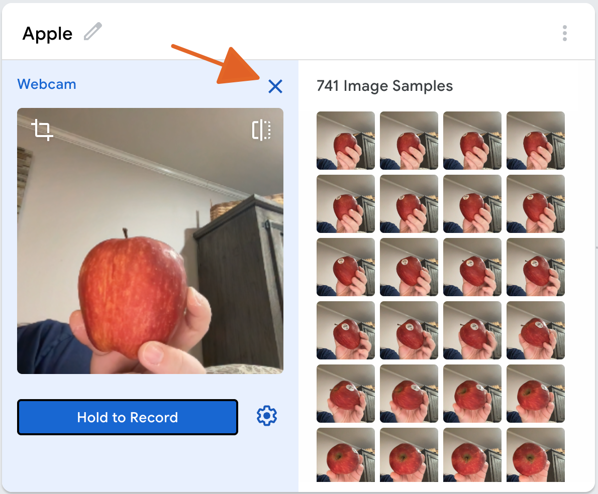
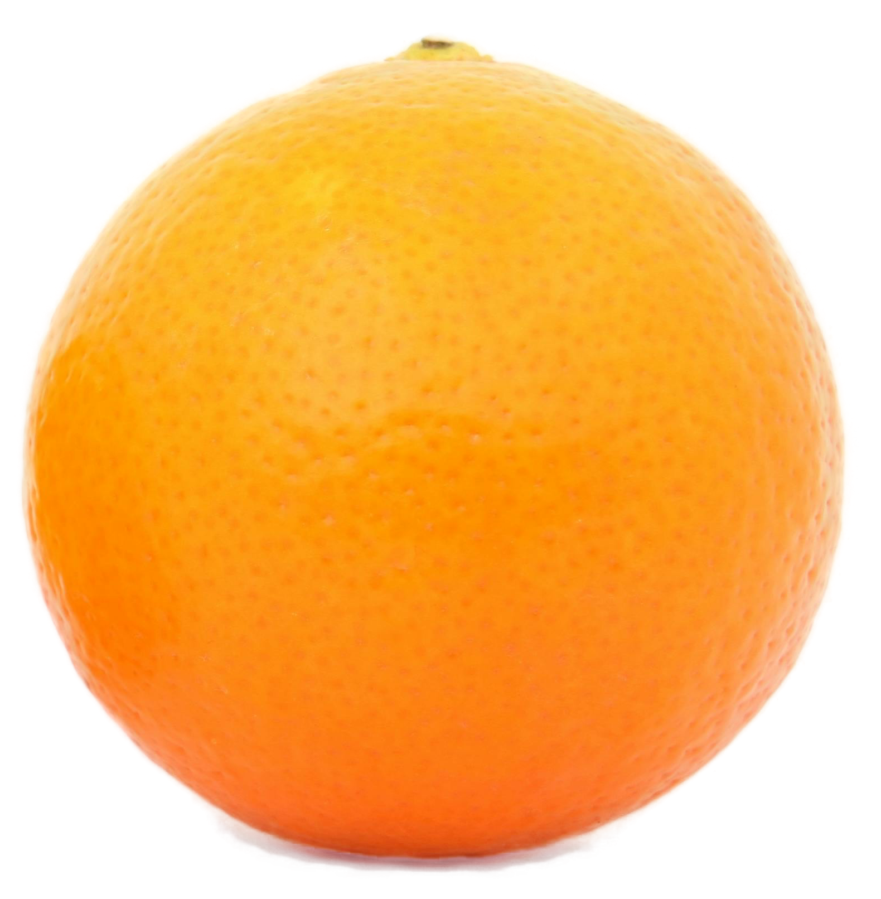
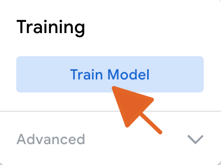

Classification Activity - Train
You have seen different examples of classification, now it’s your turn to train your own classification model!
- 1 Apple and 1 Orange per pair
- 1 Distractor (fruit, ball, etc.) per pair
- 1 Device per pair/group
- 1 lab sheet per person
Teachable Machine

To create your own model, we will use Google’s Teachable Machine. Teachable Machine uses 🐍 Python (yes! The same Python we used in Workshop #1) to help users build classification models. It just hides the 🐍 Python in the background.
Steps
- Go to Teachable Machine
- Click “Get Started”

- Choose “Image Project”

- Select “Standard Image Model”

- To the right of “Class 1”, click the pencil and type “Apple”
- Grab your apple and get ready!!

- Click “webcam” to turn on and allow the computer to begin capturing images of the apple.

Make sure you have a clean table and avoid messy backgrounds. Vary the lighting in your images (window, light, lamp, shadow, etc.) like might be encountered in real scenarios.
- Position your apple within the frame and click the “Hold to Record” button to begin capturing images of the apple. You will want to move the apple around so it captures different angles and distances. Capture 100-200 images.

- When finished, relase the “Hold to Record” button and click to “x” in the top right corner to exit the Apple class.

- Put your apple aside and grab your orange. Repeat the process above to train your model for Class 2. Try to capture roughly the same number of images for the orange as you did for the apple.

- When finished capturing data for both classes, click the “Train Model” button. The website will train your own custom classification model, based on your data!

Congratulations! You have trained your own classifier!
Now let’s see how well it works.
Evaluate Your Classifier
While some models can be very accurate and high quality, others may struggle. Now, let’s put your model to the test to see how it performs. To do this, you’ll use the “Preview” pane on the right side of the Teachable Machine screen.

Putting it to the Test
Get your lab sheet ready. Let’s record some results!
Steps—Part A
Trade your apple and orange with another group. No group should have the exact same fruits you trained the model with.
Take your lab sheet and review the observation table. The first item to test is an apple. If the model works well, what will it predict? Record this in the second column.
Next, hold the apple up to your camera. What does the model predict it is? Record this in the third column of your lab sheet.
The model also reports confidence in its prediction. Record this percent confidence in the fourth column of your sheet.
Repeat this process for all other objects on the lab sheet.
Reflecting
How did your model perform?
Were any objects classified incorrectly?
Were any objects classified with low confidence (< 80%)?
Discuss these questions (and your model) with your group.